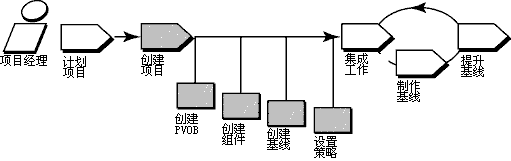

概述
下图说明管理 UCM 项目的工作流程。此工具向导中讨论了加阴影的区域。

此工具向导在运行 Microsoft Windows 时适用。 它描述了在完整 ClearCase 中可用的特性。
术语
RUP 术语和 ClearCase 所用的术语之间存在一些差别。以下特定于工具的术语的定义将有助于阐明这些差别。
-
活动：ClearCase 活动紧密映射到 RUP 工作单。请勿将其与 RUP 概念术语定义：活动相混淆。
-
配置管理：在 ClearCase 中，术语“配置管理”的使用是指版本控制和工作版本管理。RUP 使用术语定义：配置管理（CM）的 IEEE 和 ISO 定义，“配置管理”还包括“变更管理”。
-
配置和变更管理：ClearCase 和 Rational ClearQuest 都指配置和变更管理，它类似于术语定义：配置管理的 RUP 定义。RUP 以相同的含义使用这些术语。
-
项目：ClearCase 项目映射到 RUP 项目存储库。
工具步骤
要设置 UCM 项目：
-
创建用于存储项目信息的存储库
-
创建包含开发人员处理的一组文件的组件
-
创建确定文件版本的基线，开发人员使用这些版本开始工作
-
创建 UCM 项目
ClearCase 项目需要项目 VOB（PVOB），它用于存储 UCM 对象和有关信息。
-
要启动“VOB 创建向导”，请从 Windows 任务栏中，单击开始 > 程序 > Rational Software > Rational ClearCase > 管理 > 创建
VOB。
-
在第一个屏幕上，确保选中了 UCM 项目数据复选框。
-
选择帮助，帮助会提供完成该向导的指导。
 请参考 ClearCase 联机帮助中的主题 VOB Creation
Wizard，以获取详细信息。 请参考 ClearCase 联机帮助中的主题 VOB Creation
Wizard，以获取详细信息。
组件用于将一组相关目录和文件元素组织到 UCM 项目中。通常情况下，您开发、集成和发行一起组成一个组件的元素。项目必须包含至少一个组件，且可以包含多个组件。项目可以共享组件。
可以使用 VOB 创建向导创建组件：
-
单击开始 > 程序 > Rational ClearCase 管理 > 创建 VOB。
-
在向导的第一步，选中将 VOB 创建为 UCM 组件。新建的 VOB 可供 UCM 项目用作组件。
也可以通过将现有 VOB 转换为组件，来将存储在 VOB 中的现有数据迁移到 UCM 项目中：
-
浏览到 ClearCase Project Explorer。从 Windows 任务栏单击开始 > 程序 > Rational Software > Rational ClearCase >
Project Explorer。
-
选择 PVOB 的根文件夹。
-
单击工具 > 导入 VOB。出现“导入 VOB”对话框。在“可用 VOB”列表中，选择要制成组件的 VOB。
-
要将 VOB 移至要导入的 VOB 列表中，请单击添加。
-
完成时，单击导入。
 请参阅 ClearCase 手册 Managing Projects
中的主题“Creating Components”。 请参阅 ClearCase 手册 Managing Projects
中的主题“Creating Components”。
3. 创建标识开发人员开始工作的文件版本的基线。
基线对组件的每个元素确定一个版本，表示可从中开始工作的稳定的源配置。UCM 模型需要使用它们来访问组件的文件和目录。
当从头开始创建 ClearCase 组件时，它们是随初始基线一起创建的。
如果将基本 ClearCase VOB 转换为组件，则可以从现有的已标注版本建立基线。 检查最新的稳定版本是否已标注。如果尚未标注，则需要创建一个标签类型并将其应用于计划包含在项目中的版本。
有关详细信息，请参阅 ClearCase 联机帮助中的主题 Using
the Apply Label Wizard。
要从由标签类型标识的一组版本中创建基线：
-
在 ClearCase Project Explorer 中，选择 PVOB 的根文件夹。单击工具 > 导入标签。 出现“导入标签向导”。
-
在可用组件列表中，选择一个组件，该组件包含创建基线所依据的标签。
-
要将组件移至选定组件列表中，请单击添加。
-
完成后单击下一步。
-
在“导入标签向导”的步骤 2 中，选择要导入的标签类型。输入基线名称，该基线是为由标签类型标识的版本创建的。选择基线的提升级别。 单击完成。
此过程创建一个项目基本基线，它确定开发人员要用于开始工作的文件版本。
请参考 ClearCase 联机帮助中的 Create and
manage baselines 主题。
在创建了将要使用的项目 VOB 和组件之后，就可以创建 UCM 项目了。要执行此操作，必须提供项目名称并确定该项目的项目组件和基线。ClearCase 提供了“新建项目向导”，引导您完成此过程的步骤。
-
在 ClearCase Project Explorer 中，选择 PVOB 的根文件夹。从弹出菜单中单击创建新项目，以启动该向导。
-
遵循该向导提供的步骤。单击每个屏幕上的帮助按钮可获取每个步骤的帮助。
-
在向导的步骤 3，添加要用于该项目的组件基线，指定在上述过程 3 中创建的基线。
-
向导的下两个步骤要求您指定项目的详细配置信息，包括开发策略和是否允许项目使用 Rational 变更请求数据库。 可以定制配置以符合项目的特定需要。有关所有可用选项的描述，请参阅联机帮助。
有关此过程的概述，请参考 ClearCase 联机帮助中的以下主题：
-
Workflow for creating projects
-
New Project Wizard
|